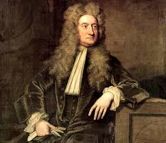
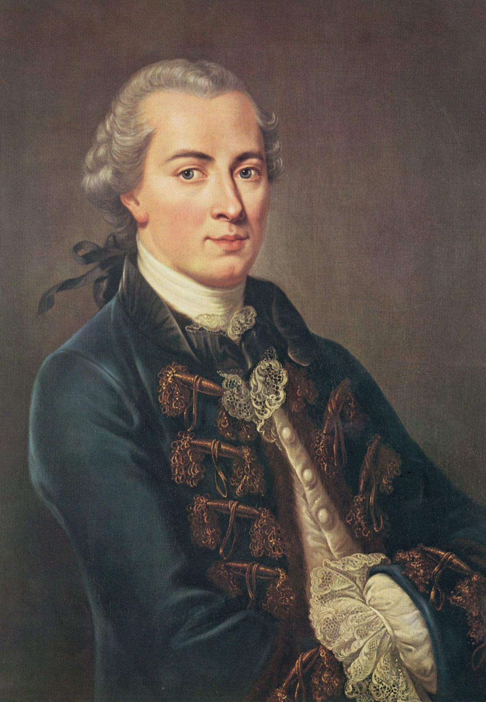

Iluminismo
René Descartes

(1596-1650)
Isaac Newton
(1642-1727)
Filosofos da época
John Locke
(1632-1704)
Barão Montesquieu

(1689-1755)
Voltaire
(1694-1778)
Jean-Jacques Rousseau
(1712-1778)
Ecomistas
Quesmay (1694-1774)
Tutgot (1727-1781)
Gournay (1712-1759)
Adam Smich (1723-1790)
Ecomistas
- Quesmay (1694-1774)
- Tutgot (1727-1781)
- Gournay (1712-1759)
- Adam Smich (1723-1790)